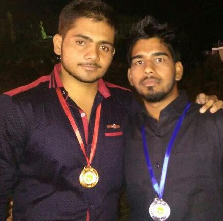
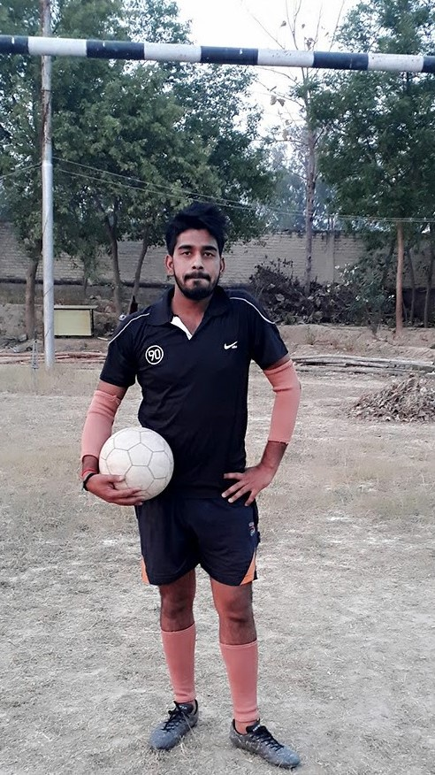
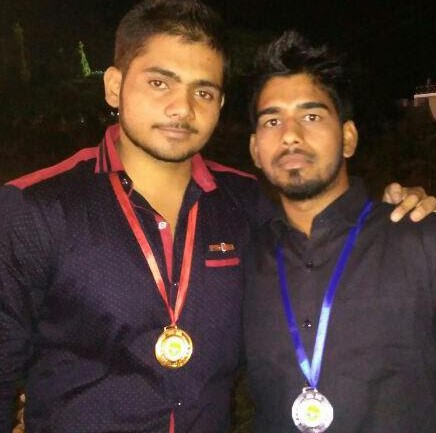
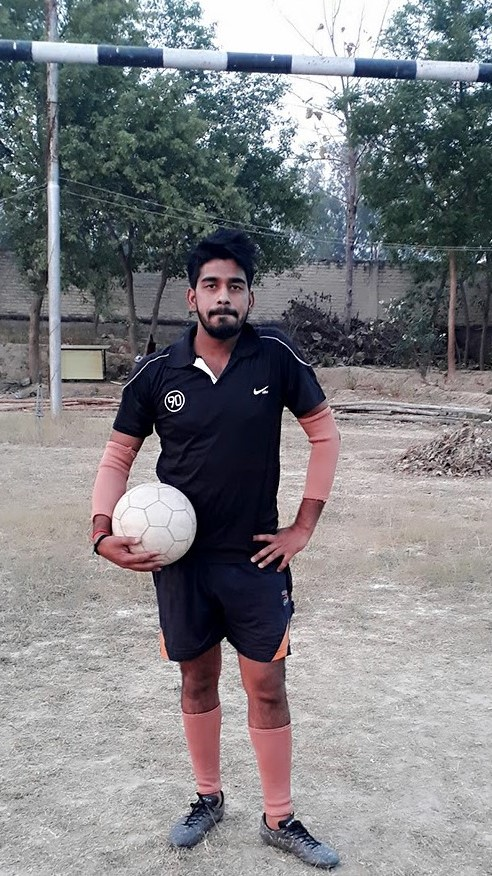

Facilities
Academics
Rajpoot global’ School is affiliated with the CISCE and administers the ICSE(X) and ISC(XII) examinations.
Junior School
Junior school has the system of grading to judge the students' academics Each class is under the supervision of a single teacher who teaches all the subjects and interacts with the students for their betterment in academics Educational field trips are undertaken once a year to a certain place Once a week the boys go to the school library which has a sizable collection of books to satisfy every students needs. Nursery-Transition: Introduction to alphabets and numbers and extended playtime for the aid of developing the students. Class-1: Introduction to the study of a vernacular language of the choice of the student. The students choose between Hindi and Bengali. Class 2: Introduction of General Science and practical analysis of the trees in the school compound for better understanding and Environmental education and English literature. Class 3:Introduction to Social studies as a subject which include History, Civics and Geography Class 4: The students are given their 1st chance to show their abilities as the best students from the past 6 years are chosen to be Junior School Leaders to lead their fellow students..
Middle School(Classes 5-8)
Introduction to the students to half-yearly and annual examinations Introduction to the concept of separately specialized teachers teaching separate subjects to improve their knowledge and concepts Class 5-6: Introduction to higher level of study of the subjects already being taught. Higher level of mathematics by bringing distinction between arithmetic, algebra and geometry. Introduction of 3rd language. Class 7: Introduction of Physics, Chemistry and Biology as separate subjects. Weekly visits to the Science Labs for practical demonstrations are scheduled. Class 8:Students who have excelled in academics as well as extracurricular activities are given the chance to be Middle School Leaders to lead their juniors.
Senior School(Classes 9-12)
Seminars, Presentations, Workshops and counselling are organised for enriching the skill sets of the students. 3rd Language classes end Class 9: Students choose either the Science or Commerce stream. English, 2nd Language(Vernacular), History Civics and Geography and Mathematics are compulsory Science(Physics, Chemistry, Biology) is offered to the Science students along with Computer Applications, Economic Applications, Art and Physical Education (any one as the sixth subject). For the Commerce section- Commercial Studies, Economic Applications, Physical Education, Art(any one to be chosen). Class 9-12: Weekly trips to the lab are made for practical experiments with practical examinations. Class 10: Students have their 1st Board examination. The school gives 2 pre-Board examinations for students to improve on their academics before their examination Class 11: Science students choose other than English which is compulsory, Physics, Chemistry, Mathematics and any one of the following Biology Computer Science Economics Commerce Students settle for Commerce, Accounts, Economics, Physical Education, Art, Mathematics or Business Studies.
Class 12:
Students who have worked for the school for the past years in the field of academics as well as sports are given the chance to be Prefects and they have the highest powers assigned to students. Preparations for the I.S.C. examinations in the last year of their school life.
Sports
Rajpoot global’ School has one of the largest playgrounds among Schools in Kolkata. Rajpoot global’ School has a covered regulation size basketball court St. James’ School holds its Annual Athletic Meet where students participate and win medals and certificates for their performance. Junior School has their sports on a different day.
 


